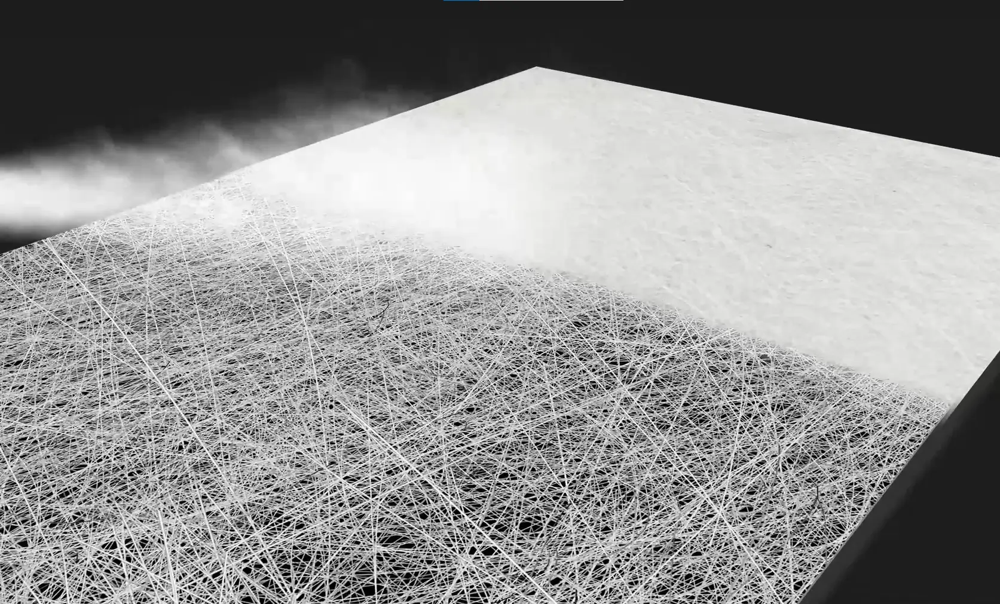

Fast drying isn't magic. It's physics — engineered into every fiber, every pore, every layer. Here's how it works.
Electrospinning is a manufacturing process that uses a precisely controlled electric field to stretch a polymer solution into fibers hundreds of times thinner than a human hair — down to the sub-micron scale (0.1–1 μm in diameter).
The result is a continuous, interlocking web of ultrafine fibers. This web is not woven or knitted — it forms organically, creating a three-dimensional porous structure with an extraordinarily high surface-area-to-volume ratio.
That structure is the starting point for everything this robe does.
Fiber diameter — 100× thinner than a human hair

A high-voltage electric field pulls a polymer solution into sub-micron fibers. Watch the process.
Porosity isn't just empty space. In electrospun nanofiber, it's a network of precision-sized channels that actively move fluid.
The electrospun membrane contains billions of interconnected pores in the nanometer-to-micron range. The pore size and density are tuned during manufacture — not random, not accidental.
Smaller pores generate greater capillary pressure. This is the same force that pulls water up a tree from its roots — or wicks paint up a brush. In the nanofiber layer, this pressure actively draws sweat away from your skin.
Once moisture is moved to the outer face of the membrane, the high surface area of the nanofiber accelerates evaporation. More surface exposed to air means faster drying — physically, not chemically.
A wettability gradient means the inner surface of the robe wants to attract moisture (hydrophilic), while the outer surface wants to repel it (hydrophobic). This asymmetry creates a one-way directional pressure.
Sweat from your skin enters the hydrophilic inner face and is pulled toward the hydrophobic outer face by the energy gradient. Once at the outer surface, the fabric pushes the moisture away. It cannot flow back inward against the gradient.
The result: moisture is actively transported away from your body. Not absorbed and sitting, not stored and idle — Moved.
Attracts and accepts moisture from skin. High surface energy — water wants to be here.
Water-AttractingThe nanofiber membrane bridges the wettability gap — driving moisture from in to out.
Directional TransportRepels moisture and exposes it to air for rapid evaporation. Blocks back-flow.
Water-RepellingPFAS — Per- and Polyfluoroalkyl Substances — are a class of thousands of synthetic chemicals used historically in textiles to create water resistance. They are called "forever chemicals" because they do not break down in the environment or in the human body.
They accumulate in soil, water, and living tissue. The EPA and regulatory bodies worldwide are progressively restricting or banning them. And they were in the coating of fabrics athletes wear against their skin.
The Titan X robe achieves its moisture-management performance through physical structure alone — the geometry of the nanofiber membrane and the wettability gradient built into the layer system. No fluorinated chemistry required.
PTFE (Polytetrafluoroethylene) is the best-known fluoropolymer — the same chemical family as Teflon. When used in textiles, it creates a slippery, water-repellent surface. It is chemically inert but environmentally persistent and increasingly flagged as a health concern in prolonged skin contact applications.
We achieve hydrophobicity on the outer shell through nylon fiber geometry and mechanical structure — not chemical coatings. The inner polyester layer's hydrophilicity is an inherent property of the fiber, not added fluoride chemistry. Clean performance at every layer.
Each layer has a precise function. Together, they form a complete moisture management system.
The innermost layer sits directly against your skin. Dual-ply polyester construction wicks initial moisture away from your body surface. Polyester is inherently hydrophilic at the fiber level — it accepts sweat readily and channels it outward toward the nanofiber membrane. Soft-hand finish for direct skin comfort throughout competition.
Hydrophilic · Skin Contact LayerThe core technology. This membrane is where capillary action, porosity, and the wettability gradient work in concert. Sub-micron fibers create billions of pores that generate capillary pressure — actively drawing moisture from the inner polyester layer and pushing it outward to the nylon shell. This layer is what separates the Titan X robe from every cotton or polyester-only product on the market.
Core Technology · Directional TransportThe exterior layer protects the nanofiber membrane and provides a durable, fast-drying surface. Nylon's natural hydrophobic tendency at this face repels incoming moisture (rain, humidity) while allowing evaporation of moisture that has been transported outward from inside the robe. The structure is robust enough for the physical demands of tournament environments.
Hydrophobic · Protective ShellTitanium dioxide (TiO₂) is a photocatalytic material under active research as a future enhancement to the Titan X robe. When exposed to UV light, TiO₂ catalyzes the breakdown of organic compounds — including bacteria and odor-causing molecules — on the fabric surface.
This would give the robe passive antimicrobial and self-cleaning properties without the need for chemical sanitizers or fluorinated compounds. The coating is fully compatible with the existing layer system and PFAS-free construction philosophy.
We are evaluating application methods that preserve the nanofiber membrane's pore structure. This feature is in the research phase and not yet in production.
UV-activated self-cleaning and antimicrobial surface treatment. No additional chemicals. No fluorinated compounds. Powered by light.